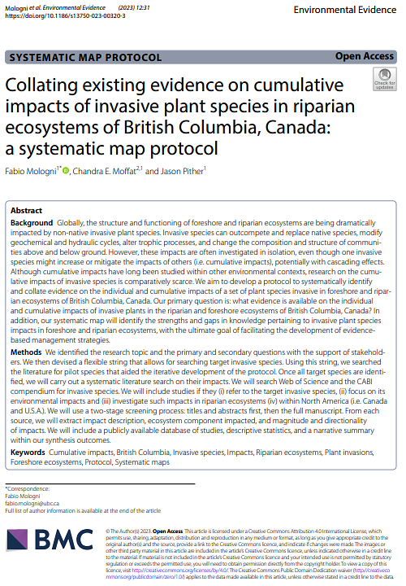

Systematic mapping of the evidence on the impacts of invasive plant species
In this project, we aim to systematically compile and map evidence on the individual and cumulative impacts of invasive plant species. We first developed a reproducible protocol to compile the available evidence systematically, which we are now applying to a set of plant species invasive to foreshore and riparian ecosystems in British Columbia.

Goals:
(1) Develop a reproducible protocol to systematically compiling the evidence on the individual and cumulative impacts of plant invasive species.
(2) Apply and test this protocol to systematically map the individual and cumulative impacts of 9 plant species invasive to foreshore and riparian ecosystems in British Columbia.
Please note that the results below are preliminary and subject to change. This page will be updated accordingly as the project progresses.